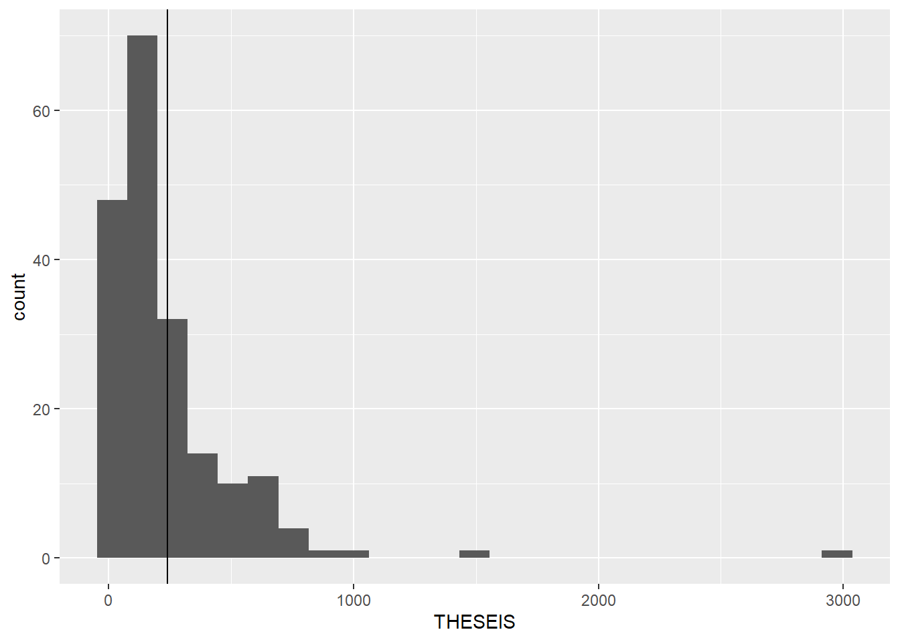

Μέτρα θέσης
Κώστας Κούδας
2025-04-02
Πολλές φορές μπορεί να θελήσουμε να εκφράσουμε κάποια δεδομένα με έναν μόνο αριθμό. Εδώ π.χ. θα μελετήσουμε τον αριθμό των ανθρώπων (και ειδικότερα των γυναικών) στο νομοθετικό σώμα κάθε χώρας. Τοιαύτη περιπτώσει μπορεί να ενδιαφερόμαστε να εκφράσουμε έναν ενιαίο αριθμό για όλη τη Γη που να αντιπροσωπεύει όλες τις τιμές που πραγματικά υπάρχουν. Αυτό το ένα αντιπροσωπευτικό νούμερο, αυτός ο αριθμός που εκφράζει, έστω και προσεγγιστικά, όλο το πλήθος διαφορετικών τιμών, ονομάζεται μέτρο θέσης. Υπάρχουν διάφορα μέτρα θέσης. Εδώ θα εξετάσουμε κάποια απ’ αυτά.
1 Μέση τιμή
Τα δεδομένα κατεβάστηκαν από εδώ και αποθηκεύτηκαν κατόπιν μικρής επεξεργασίας σ’ ένα αρχείο ονόματι GynPolit.xlsx, αφού πρώτα διαγράφηκαν οι μεταβλητές της προηγούμενης ενότητας.
| XORA | SOMA | EKLOGES | THESEIS | GYNAIKES | POSOSTO |
|---|---|---|---|---|---|
| Rwanda | KatoBoyli | 03.09.2018 | 80 | 49 | 61.3% |
| Cuba | KatoBoyli | 11.03.2018 | 605 | 322 | 53.2% |
| Bolivia | KatoBoyli | 12.10.2014 | 130 | 69 | 53.1% |
| Mexico | KatoBoyli | 01.07.2018 | 500 | 241 | 48.2% |
| Sweden | KatoBoyli | 09.09.2018 | 349 | 165 | 47.3% |
| Grenada | KatoBoyli | 13.03.2018 | 15 | 7 | 46.7% |
| Namibia | KatoBoyli | 29.11.2014 | 104 | 48 | 46.2% |
| Costa Rica | KatoBoyli | 04.02.2018 | 57 | 26 | 45.6% |
| Nicaragua | KatoBoyli | 06.11.2016 | 92 | 41 | 44.6% |
| South Africa 1 | KatoBoyli | 07.05.2014 | 393 | 168 | 42.7% |
| Senegal | KatoBoyli | 30.07.2017 | 165 | 69 | 41.8% |
| Finland | KatoBoyli | 19.04.2015 | 200 | 83 | 41.5% |
| Spain | KatoBoyli | 26.06.2016 | 350 | 144 | 41.1% |
| Norway | KatoBoyli | 11.09.2017 | 169 | 69 | 40.8% |
| New Zealand | KatoBoyli | 23.09.2017 | 120 | 48 | 40.0% |
| Timor-Leste | KatoBoyli | 12.05.2018 | 65 | 26 | 40.0% |
| France | KatoBoyli | 11.06.2017 | 577 | 229 | 39.7% |
| Mozambique | KatoBoyli | 15.10.2014 | 250 | 99 | 39.6% |
| Argentina | KatoBoyli | 22.10.2017 | 255 | 99 | 38.8% |
| Ethiopia | KatoBoyli | 24.05.2015 | 547 | 212 | 38.8% |
| North Macedonia | KatoBoyli | 11.12.2016 | 120 | 46 | 38.3% |
| Iceland | KatoBoyli | 28.10.2017 | 63 | 24 | 38.1% |
| Belgium | KatoBoyli | 25.05.2014 | 150 | 57 | 38.0% |
| Ecuador | KatoBoyli | 19.02.2017 | 137 | 52 | 38.0% |
| Serbia | KatoBoyli | 24.04.2016 | 247 | 93 | 37.7% |
| Denmark | KatoBoyli | 18.06.2015 | 179 | 67 | 37.4% |
| Austria | KatoBoyli | 15.10.2017 | 183 | 68 | 37.2% |
| United Republic of Tanzania | KatoBoyli | 25.10.2015 | 393 | 145 | 36.9% |
| Burundi | KatoBoyli | 29.06.2015 | 121 | 44 | 36.4% |
| Tunisia | KatoBoyli | 26.10.2014 | 217 | 78 | 35.9% |
| Italy | KatoBoyli | 04.03.2018 | 630 | 225 | 35.7% |
| Portugal | KatoBoyli | 04.10.2015 | 230 | 82 | 35.7% |
| Uganda | KatoBoyli | 18.02.2016 | 459 | 160 | 34.9% |
| Belarus | KatoBoyli | 11.09.2016 | 110 | 38 | 34.5% |
| Monaco | KatoBoyli | 14.02.2018 | 24 | 8 | 33.3% |
| Nepal | KatoBoyli | 26.11.2017 | 275 | 90 | 32.7% |
| Switzerland | KatoBoyli | 18.10.2015 | 200 | 65 | 32.5% |
| Andorra | KatoBoyli | 01.03.2015 | 28 | 9 | 32.1% |
| United Kingdom | KatoBoyli | 08.06.2017 | 650 | 208 | 32.0% |
| Guyana | KatoBoyli | 11.05.2015 | 69 | 22 | 31.9% |
| Zimbabwe | KatoBoyli | 30.07.2018 | 270 | 86 | 31.9% |
| Netherlands | KatoBoyli | 15.03.2017 | 150 | 47 | 31.3% |
| Cameroon | KatoBoyli | 30.09.2013 | 180 | 56 | 31.1% |
| El Salvador | KatoBoyli | 04.03.2018 | 84 | 26 | 31.0% |
| Latvia | KatoBoyli | 06.10.2018 | 100 | 31 | 31.0% |
| Trinidad and Tobago | KatoBoyli | 07.09.2015 | 42 | 13 | 31.0% |
| Germany | KatoBoyli | 24.09.2017 | 709 | 219 | 30.9% |
| Angola | KatoBoyli | 23.08.2017 | 220 | 66 | 30.0% |
| Australia | KatoBoyli | 02.07.2016 | 150 | 45 | 30.0% |
| Peru | KatoBoyli | 10.04.2016 | 130 | 39 | 30.0% |
| Philippines | KatoBoyli | 09.05.2016 | 292 | 86 | 29.5% |
| Suriname | KatoBoyli | 24.05.2015 | 51 | 15 | 29.4% |
| Albania | KatoBoyli | 25.06.2017 | 140 | 41 | 29.3% |
| Israel | KatoBoyli | 17.03.2015 | 120 | 35 | 29.2% |
| Poland | KatoBoyli | 25.10.2015 | 460 | 134 | 29.1% |
| Estonia | KatoBoyli | 01.03.2015 | 101 | 29 | 28.7% |
| South Sudan | KatoBoyli | 04.08.2016 | 383 | 109 | 28.5% |
| Sudan | KatoBoyli | 13.04.2015 | 481 | 133 | 27.7% |
| Lao People’s Democratic Republic | KatoBoyli | 20.03.2016 | 149 | 41 | 27.5% |
| Kazakhstan | KatoBoyli | 20.03.2016 | 107 | 29 | 27.1% |
| Canada | KatoBoyli | 19.10.2015 | 334 | 90 | 26.9% |
| Dominican Republic | KatoBoyli | 15.05.2016 | 190 | 51 | 26.8% |
| Viet Nam | KatoBoyli | 22.05.2016 | 494 | 132 | 26.7% |
| Djibouti | KatoBoyli | 23.02.2018 | 65 | 17 | 26.2% |
| Algeria | KatoBoyli | 04.05.2017 | 462 | 119 | 25.8% |
| Bulgaria | KatoBoyli | 26.03.2017 | 240 | 62 | 25.8% |
| Iraq | KatoBoyli | 12.05.2018 | 329 | 83 | 25.2% |
| Dominica | KatoBoyli | 08.12.2014 | 32 | 8 | 25.0% |
| Luxembourg | KatoBoyli | 14.10.2018 | 60 | 15 | 25.0% |
| San Marino | KatoBoyli | 20.11.2016 | 60 | 15 | 25.0% |
| Turkmenistan | KatoBoyli | 25.03.2018 | 124 | 31 | 25.0% |
| China | KatoBoyli | 05.03.2018 | 2975 | 742 | 24.9% |
| Slovenia | KatoBoyli | 03.06.2018 | 90 | 22 | 24.4% |
| Somalia | KatoBoyli | 23.10.2016 | 275 | 67 | 24.4% |
| Armenia | KatoBoyli | 02.04.2017 | 132 | 32 | 24.2% |
| Afghanistan | KatoBoyli | 20.10.2018 | 250 | 59 | 23.6% |
| Cabo Verde | KatoBoyli | 20.03.2016 | 72 | 17 | 23.6% |
| United States of America | KatoBoyli | 06.11.2018 | 433 | 102 | 23.6% |
| Montenegro | KatoBoyli | 16.10.2016 | 81 | 19 | 23.5% |
| Lesotho | KatoBoyli | 03.06.2017 | 120 | 28 | 23.3% |
| Singapore | KatoBoyli | 11.09.2015 | 100 | 23 | 23.0% |
| Guinea | KatoBoyli | 28.09.2013 | 114 | 26 | 22.8% |
| Republic of Moldova | KatoBoyli | 30.11.2014 | 101 | 23 | 22.8% |
| Chile | KatoBoyli | 19.11.2017 | 155 | 35 | 22.6% |
| Czech Republic | KatoBoyli | 20.10.2017 | 200 | 45 | 22.5% |
| United Arab Emirates | KatoBoyli | 03.10.2015 | 40 | 9 | 22.5% |
| Ireland | KatoBoyli | 26.02.2016 | 158 | 35 | 22.2% |
| Uruguay | KatoBoyli | 26.10.2014 | 99 | 22 | 22.2% |
| Venezuela (Bolivarian Republic of) | KatoBoyli | 06.12.2015 | 167 | 37 | 22.2% |
| Eritrea | KatoBoyli | 01.02.1994 | 150 | 33 | 22.0% |
| Kenya | KatoBoyli | 08.07.2017 | 349 | 76 | 21.8% |
| Bosnia and Herzegovina | KatoBoyli | 07.10.2018 | 42 | 9 | 21.4% |
| Lithuania | KatoBoyli | 09.10.2016 | 141 | 30 | 21.3% |
| Seychelles | KatoBoyli | 08.09.2016 | 33 | 7 | 21.2% |
| Honduras | KatoBoyli | 26.11.2017 | 128 | 27 | 21.1% |
| Bangladesh | KatoBoyli | 30.12.2018 | 348 | 72 | 20.7% |
| Romania | KatoBoyli | 11.12.2016 | 329 | 68 | 20.7% |
| Croatia | KatoBoyli | 11.09.2016 | 151 | 31 | 20.5% |
| Morocco | KatoBoyli | 07.10.2016 | 395 | 81 | 20.5% |
| Mauritania | KatoBoyli | 01.09.2018 | 153 | 31 | 20.3% |
| Pakistan | KatoBoyli | 25.08.2018 | 341 | 69 | 20.2% |
| Barbados | KatoBoyli | 24.05.2018 | 30 | 6 | 20.0% |
| Cambodia | KatoBoyli | 29.07.2018 | 125 | 25 | 20.0% |
| Equatorial Guinea | KatoBoyli | 12.11.2017 | 100 | 20 | 20.0% |
| Slovakia | KatoBoyli | 05.03.2016 | 150 | 30 | 20.0% |
| Saudi Arabia | KatoBoyli | 02.12.2016 | 151 | 30 | 19.9% |
| Fiji | KatoBoyli | 14.11.2018 | 51 | 10 | 19.6% |
| Kyrgyzstan | KatoBoyli | 04.10.2015 | 120 | 23 | 19.2% |
| Madagascar | KatoBoyli | 20.12.2013 | 151 | 29 | 19.2% |
| Guatemala | KatoBoyli | 06.09.2015 | 158 | 30 | 19.0% |
| Tajikistan | KatoBoyli | 01.03.2015 | 63 | 12 | 19.0% |
| Colombia | KatoBoyli | 11.03.2018 | 171 | 32 | 18.7% |
| Greece | KatoBoyli | 20.09.2015 | 300 | 56 | 18.7% |
| Panama | KatoBoyli | 04.05.2014 | 71 | 13 | 18.3% |
| Indonesia | KatoBoyli | 09.04.2014 | 560 | 102 | 18.2% |
| Zambia | KatoBoyli | 11.08.2016 | 167 | 30 | 18.0% |
| Cyprus | KatoBoyli | 22.05.2016 | 56 | 10 | 17.9% |
| Gabon | KatoBoyli | 06.10.2018 | 134 | 24 | 17.9% |
| Jamaica | KatoBoyli | 22.02.2016 | 63 | 11 | 17.5% |
| Turkey | KatoBoyli | 24.06.2018 | 596 | 104 | 17.4% |
| Mongolia | KatoBoyli | 29.06.2016 | 76 | 13 | 17.1% |
| Republic of Korea | KatoBoyli | 13.04.2016 | 298 | 51 | 17.1% |
| Niger | KatoBoyli | 21.02.2016 | 171 | 29 | 17.0% |
| Azerbaijan | KatoBoyli | 01.11.2015 | 119 | 20 | 16.8% |
| Malawi | KatoBoyli | 20.05.2014 | 192 | 32 | 16.7% |
| Saint Lucia | KatoBoyli | 06.06.2016 | 18 | 3 | 16.7% |
| Togo | KatoBoyli | 20.12.2018 | 91 | 15 | 16.5% |
| Democratic People’s Republic of Korea | KatoBoyli | 09.03.2014 | 687 | 112 | 16.3% |
| Libya | KatoBoyli | 25.06.2014 | 188 | 30 | 16.0% |
| Uzbekistan | KatoBoyli | 21.12.2014 | 150 | 24 | 16.0% |
| Russian Federation | KatoBoyli | 18.09.2016 | 450 | 71 | 15.8% |
| Jordan | KatoBoyli | 20.09.2016 | 130 | 20 | 15.4% |
| Bahrain | KatoBoyli | 01.12.2018 | 40 | 6 | 15.0% |
| Brazil | KatoBoyli | 07.10.2018 | 513 | 77 | 15.0% |
| Paraguay | KatoBoyli | 22.04.2018 | 80 | 12 | 15.0% |
| Bhutan | KatoBoyli | 18.10.2018 | 47 | 7 | 14.9% |
| Chad | KatoBoyli | 13.02.2011 | 168 | 25 | 14.9% |
| Egypt | KatoBoyli | 17.10.2015 | 596 | 89 | 14.9% |
| Georgia | KatoBoyli | 08.10.2016 | 149 | 22 | 14.8% |
| Sao Tome and Principe | KatoBoyli | 07.10.2018 | 55 | 8 | 14.5% |
| Malaysia | KatoBoyli | 09.05.2018 | 222 | 32 | 14.4% |
| Guinea-Bissau | KatoBoyli | 13.04.2014 | 102 | 14 | 13.7% |
| Burkina Faso | KatoBoyli | 29.11.2015 | 127 | 17 | 13.4% |
| Saint Kitts and Nevis | KatoBoyli | 16.02.2015 | 15 | 2 | 13.3% |
| Syrian Arab Republic | KatoBoyli | 13.04.2016 | 250 | 33 | 13.2% |
| Ghana | KatoBoyli | 07.12.2016 | 275 | 36 | 13.1% |
| Saint Vincent and the Grenadines | KatoBoyli | 09.12.2015 | 23 | 3 | 13.0% |
| Bahamas | KatoBoyli | 24.05.2017 | 39 | 5 | 12.8% |
| Hungary | KatoBoyli | 08.04.2018 | 199 | 25 | 12.6% |
| India | KatoBoyli | 07.04.2014 | 524 | 66 | 12.6% |
| Palau | KatoBoyli | 01.11.2016 | 16 | 2 | 12.5% |
| Liberia | KatoBoyli | 10.10.2017 | 73 | 9 | 12.3% |
| Sierra Leone | KatoBoyli | 07.03.2018 | 146 | 18 | 12.3% |
| Liechtenstein | KatoBoyli | 05.02.2017 | 25 | 3 | 12.0% |
| Malta | KatoBoyli | 03.06.2017 | 67 | 8 | 11.9% |
| Mauritius | KatoBoyli | 10.12.2014 | 69 | 8 | 11.6% |
| Ukraine | KatoBoyli | 26.10.2014 | 423 | 49 | 11.6% |
| Congo | KatoBoyli | 16.07.2017 | 151 | 17 | 11.3% |
| Myanmar | KatoBoyli | 08.11.2015 | 433 | 49 | 11.3% |
| Antigua and Barbuda | KatoBoyli | 21.03.2018 | 18 | 2 | 11.1% |
| Cote d’Ivoire | KatoBoyli | 18.12.2016 | 255 | 28 | 11.0% |
| Nauru | KatoBoyli | 09.07.2016 | 19 | 2 | 10.5% |
| Democratic Republic of the Congo | KatoBoyli | 30.12.2018 | 485 | 50 | 10.3% |
| Gambia | KatoBoyli | 06.04.2017 | 58 | 6 | 10.3% |
| Japan | KatoBoyli | 22.10.2017 | 463 | 47 | 10.2% |
| Samoa | KatoBoyli | 04.03.2016 | 50 | 5 | 10.0% |
| Qatar | KatoBoyli | 01.07.2013 | 41 | 4 | 9.8% |
| Botswana | KatoBoyli | 24.10.2014 | 63 | 6 | 9.5% |
| Belize | KatoBoyli | 04.11.2015 | 32 | 3 | 9.4% |
| Brunei Darussalam | KatoBoyli | 13.01.2017 | 33 | 3 | 9.1% |
| Marshall Islands | KatoBoyli | 16.11.2015 | 33 | 3 | 9.1% |
| Mali | KatoBoyli | 24.11.2013 | 147 | 13 | 8.8% |
| Central African Republic | KatoBoyli | 14.02.2016 | 140 | 12 | 8.6% |
| Tonga | KatoBoyli | 16.11.2017 | 27 | 2 | 7.4% |
| Benin | KatoBoyli | 26.04.2015 | 83 | 6 | 7.2% |
| Eswatini | KatoBoyli | 21.09.2018 | 69 | 5 | 7.2% |
| Tuvalu | KatoBoyli | 31.03.2015 | 15 | 1 | 6.7% |
| Kiribati | KatoBoyli | 30.12.2015 | 46 | 3 | 6.5% |
| Comoros | KatoBoyli | 25.01.2015 | 33 | 2 | 6.1% |
| Iran (Islamic Republic of) | KatoBoyli | 26.02.2016 | 289 | 17 | 5.9% |
| Nigeria | KatoBoyli | 28.03.2015 | 359 | 20 | 5.6% |
| Thailand | KatoBoyli | 07.08.2014 | 240 | 13 | 5.4% |
| Sri Lanka | KatoBoyli | 17.08.2015 | 225 | 12 | 5.3% |
| Lebanon | KatoBoyli | 06.05.2018 | 128 | 6 | 4.7% |
| Maldives | KatoBoyli | 22.03.2014 | 85 | 4 | 4.7% |
| Kuwait | KatoBoyli | 26.11.2016 | 65 | 3 | 4.6% |
| Haiti | KatoBoyli | 09.08.2015 | 118 | 3 | 2.5% |
| Solomon Islands | KatoBoyli | 19.11.2014 | 49 | 1 | 2.0% |
| Oman | KatoBoyli | 25.10.2015 | 85 | 1 | 1.2% |
| Yemen | KatoBoyli | 27.04.2003 | 301 | 1 | 0.3% |
| Micronesia (Federated States of) | KatoBoyli | 07.03.2017 | 14 | 0 | 0.0% |
| Papua New Guinea | KatoBoyli | 24.06.2017 | 106 | 0 | 0.0% |
| Vanuatu | KatoBoyli | 22.01.2016 | 52 | 0 | 0.0% |
| Rwanda | AnoBoyli | 26.09.2011 | 26 | 10 | 38.5% |
| Cuba | AnoBoyli | 0 | 0 | 0 | 0 |
| Bolivia | AnoBoyli | 12.10.2014 | 36 | 17 | 47.2% |
| Mexico | AnoBoyli | 01.07.2018 | 128 | 63 | 49.2% |
| Sweden | AnoBoyli | 0 | 0 | 0 | 0 |
| Grenada | AnoBoyli | 27.04.2018 | 13 | 4 | 30.8% |
| Namibia | AnoBoyli | 08.12.2015 | 42 | 10 | 23.8% |
| Costa Rica | AnoBoyli | 0 | 0 | 0 | 0 |
| Nicaragua | AnoBoyli | 0 | 0 | 0 | 0 |
| South Africa 1 | AnoBoyli | 21.05.2014 | 54 | 19 | 35.2% |
| Senegal | AnoBoyli | 0 | 0 | 0 | 0 |
| Finland | AnoBoyli | 0 | 0 | 0 | 0 |
| Spain | AnoBoyli | 26.06.2016 | 266 | 98 | 36.8% |
| Norway | AnoBoyli | 0 | 0 | 0 | 0 |
| New Zealand | AnoBoyli | 0 | 0 | 0 | 0 |
| Timor-Leste | AnoBoyli | 0 | 0 | 0 | 0 |
| France | AnoBoyli | 24.09.2017 | 348 | 112 | 32.2% |
| Mozambique | AnoBoyli | 0 | 0 | 0 | 0 |
| Argentina | AnoBoyli | 22.10.2017 | 72 | 30 | 41.7% |
| Ethiopia | AnoBoyli | 05.10.2015 | 153 | 49 | 32.0% |
| North Macedonia | AnoBoyli | 0 | 0 | 0 | 0 |
| Iceland | AnoBoyli | 0 | 0 | 0 | 0 |
| Belgium | AnoBoyli | 03.07.2014 | 60 | 26 | 43.3% |
| Ecuador | AnoBoyli | 0 | 0 | 0 | 0 |
| Serbia | AnoBoyli | 0 | 0 | 0 | 0 |
| Denmark | AnoBoyli | 0 | 0 | 0 | 0 |
| Austria | AnoBoyli | NA | 61 | 22 | 36.1% |
| United Republic of Tanzania | AnoBoyli | 0 | 0 | 0 | 0 |
| Burundi | AnoBoyli | 24.07.2015 | 39 | 18 | 46.2% |
| Tunisia | AnoBoyli | 0 | 0 | 0 | 0 |
| Italy | AnoBoyli | 04.03.2018 | 320 | 110 | 34.4% |
| Portugal | AnoBoyli | 0 | 0 | 0 | 0 |
| Uganda | AnoBoyli | 0 | 0 | 0 | 0 |
| Belarus | AnoBoyli | 30.08.2012 | 56 | 17 | 30.4% |
| Monaco | AnoBoyli | 0 | 0 | 0 | 0 |
| Nepal | AnoBoyli | 07.02.2018 | 59 | 22 | 37.3% |
| Switzerland | AnoBoyli | 23.10.2011 | 46 | 7 | 15.2% |
| Andorra | AnoBoyli | 0 | 0 | 0 | 0 |
| United Kingdom | AnoBoyli | NA | 789 | 208 | 26.4% |
| Guyana | AnoBoyli | 0 | 0 | 0 | 0 |
| Zimbabwe | AnoBoyli | 30.07.2018 | 80 | 35 | 43.8% |
| Netherlands | AnoBoyli | 26.05.2015 | 75 | 27 | 36.0% |
| Cameroon | AnoBoyli | 25.03.2018 | 100 | 26 | 26.0% |
| El Salvador | AnoBoyli | 0 | 0 | 0 | 0 |
| Latvia | AnoBoyli | 0 | 0 | 0 | 0 |
| Trinidad and Tobago | AnoBoyli | 23.09.2015 | 31 | 11 | 35.5% |
| Germany | AnoBoyli | NA | 69 | 27 | 39.1% |
| Angola | AnoBoyli | 0 | 0 | 0 | 0 |
| Australia | AnoBoyli | 02.07.2016 | 76 | 30 | 39.5% |
| Peru | AnoBoyli | 0 | 0 | 0 | 0 |
| Philippines | AnoBoyli | 09.05.2016 | 24 | 6 | 25.0% |
| Suriname | AnoBoyli | 0 | 0 | 0 | 0 |
| Albania | AnoBoyli | 0 | 0 | 0 | 0 |
| Israel | AnoBoyli | 0 | 0 | 0 | 0 |
| Poland | AnoBoyli | 25.10.2015 | 100 | 14 | 14.0% |
| Estonia | AnoBoyli | 0 | 0 | 0 | 0 |
| South Sudan | AnoBoyli | 05.08.2011 | 50 | 6 | 12.0% |
| Sudan | AnoBoyli | 01.06.2015 | 71 | 19 | 26.8% |
| Lao People’s Democratic Republic | AnoBoyli | 0 | 0 | 0 | 0 |
| Kazakhstan | AnoBoyli | 28.06.2017 | 47 | 5 | 10.6% |
| Canada | AnoBoyli | NA | 105 | 49 | 46.7% |
| Dominican Republic | AnoBoyli | 15.05.2016 | 32 | 3 | 9.4% |
| Viet Nam | AnoBoyli | 0 | 0 | 0 | 0 |
| Djibouti | AnoBoyli | 0 | 0 | 0 | 0 |
| Algeria | AnoBoyli | 29.12.2018 | 132 | 9 | 6.8% |
| Bulgaria | AnoBoyli | 0 | 0 | 0 | 0 |
| Iraq | AnoBoyli | 0 | 0 | 0 | 0 |
| Dominica | AnoBoyli | 0 | 0 | 0 | 0 |
| Luxembourg | AnoBoyli | 0 | 0 | 0 | 0 |
| San Marino | AnoBoyli | 0 | 0 | 0 | 0 |
| Turkmenistan | AnoBoyli | 0 | 0 | 0 | 0 |
| China | AnoBoyli | 0 | 0 | 0 | 0 |
| Slovenia | AnoBoyli | 22.11.2017 | 40 | 4 | 10.0% |
| Somalia | AnoBoyli | 23.10.2016 | 54 | 13 | 24.1% |
| Armenia | AnoBoyli | 0 | 0 | 0 | 0 |
| Afghanistan | AnoBoyli | 10.01.2015 | 68 | 16 | 23.5% |
| Cabo Verde | AnoBoyli | 0 | 0 | 0 | 0 |
| United States of America | AnoBoyli | 06.11.2018 | 100 | 25 | 25.0% |
| Montenegro | AnoBoyli | 0 | 0 | 0 | 0 |
| Lesotho | AnoBoyli | 11.07.2017 | 32 | 7 | 21.9% |
| Singapore | AnoBoyli | 0 | 0 | 0 | 0 |
| Guinea | AnoBoyli | 0 | 0 | 0 | 0 |
| Republic of Moldova | AnoBoyli | 0 | 0 | 0 | 0 |
| Chile | AnoBoyli | 19.11.2017 | 43 | 10 | 23.3% |
| Czech Republic | AnoBoyli | 05.10.2018 | 81 | 13 | 16.0% |
| United Arab Emirates | AnoBoyli | 0 | 0 | 0 | 0 |
| Ireland | AnoBoyli | 25.04.2016 | 60 | 18 | 30.0% |
| Uruguay | AnoBoyli | 26.10.2014 | 31 | 8 | 25.8% |
| Venezuela (Bolivarian Republic of) | AnoBoyli | 0 | 0 | 0 | 0 |
| Eritrea | AnoBoyli | 0 | 0 | 0 | 0 |
| Kenya | AnoBoyli | 08.07.2017 | 68 | 21 | 30.9% |
| Bosnia and Herzegovina | AnoBoyli | 29.01.2015 | 15 | 2 | 13.3% |
| Lithuania | AnoBoyli | 0 | 0 | 0 | 0 |
| Seychelles | AnoBoyli | 0 | 0 | 0 | 0 |
| Honduras | AnoBoyli | 0 | 0 | 0 | 0 |
| Bangladesh | AnoBoyli | 0 | 0 | 0 | 0 |
| Romania | AnoBoyli | 11.12.2016 | 136 | 19 | 14.0% |
| Croatia | AnoBoyli | 0 | 0 | 0 | 0 |
| Morocco | AnoBoyli | 02.10.2015 | 120 | 14 | 11.7% |
| Mauritania | AnoBoyli | 0 | 0 | 0 | 0 |
| Pakistan | AnoBoyli | 03.03.2018 | 104 | 20 | 19.2% |
| Barbados | AnoBoyli | 05.06.2018 | 21 | 8 | 38.1% |
| Cambodia | AnoBoyli | 25.02.2018 | 62 | 11 | 17.7% |
| Equatorial Guinea | AnoBoyli | 12.11.2017 | 72 | 11 | 15.3% |
| Slovakia | AnoBoyli | 0 | 0 | 0 | 0 |
| Saudi Arabia | AnoBoyli | 0 | 0 | 0 | 0 |
| Fiji | AnoBoyli | 0 | 0 | 0 | 0 |
| Kyrgyzstan | AnoBoyli | 0 | 0 | 0 | 0 |
| Madagascar | AnoBoyli | 29.12.2015 | 63 | 13 | 20.6% |
| Guatemala | AnoBoyli | 0 | 0 | 0 | 0 |
| Tajikistan | AnoBoyli | 27.03.2015 | 32 | 7 | 21.9% |
| Colombia | AnoBoyli | 11.03.2018 | 105 | 22 | 21.0% |
| Greece | AnoBoyli | 0 | 0 | 0 | 0 |
| Panama | AnoBoyli | 0 | 0 | 0 | 0 |
| Indonesia | AnoBoyli | 0 | 0 | 0 | 0 |
| Zambia | AnoBoyli | 0 | 0 | 0 | 0 |
| Cyprus | AnoBoyli | 0 | 0 | 0 | 0 |
| Gabon | AnoBoyli | 13.12.2014 | 102 | 18 | 17.6% |
| Jamaica | AnoBoyli | 10.03.2016 | 21 | 5 | 23.8% |
| Turkey | AnoBoyli | 0 | 0 | 0 | 0 |
| Mongolia | AnoBoyli | 0 | 0 | 0 | 0 |
| Republic of Korea | AnoBoyli | 0 | 0 | 0 | 0 |
| Niger | AnoBoyli | 0 | 0 | 0 | 0 |
| Azerbaijan | AnoBoyli | 0 | 0 | 0 | 0 |
| Malawi | AnoBoyli | 0 | 0 | 0 | 0 |
| Saint Lucia | AnoBoyli | 05.01.2012 | 11 | 3 | 27.3% |
| Togo | AnoBoyli | 0 | 0 | 0 | 0 |
| Democratic People’s Republic of Korea | AnoBoyli | 0 | 0 | 0 | 0 |
| Libya | AnoBoyli | 0 | 0 | 0 | 0 |
| Uzbekistan | AnoBoyli | 13.01.2015 | 100 | 17 | 17.0% |
| Russian Federation | AnoBoyli | NA | 170 | 31 | 18.2% |
| Jordan | AnoBoyli | 27.09.2016 | 65 | 10 | 15.4% |
| Bahrain | AnoBoyli | 09.12.2018 | 40 | 9 | 22.5% |
| Brazil | AnoBoyli | 07.10.2018 | 81 | 12 | 14.8% |
| Paraguay | AnoBoyli | 22.04.2018 | 45 | 9 | 20.0% |
| Bhutan | AnoBoyli | 20.04.2018 | 25 | 4 | 16.0% |
| Chad | AnoBoyli | 0 | 0 | 0 | 0 |
| Egypt | AnoBoyli | 0 | 0 | 0 | 0 |
| Georgia | AnoBoyli | 0 | 0 | 0 | 0 |
| Sao Tome and Principe | AnoBoyli | 0 | 0 | 0 | 0 |
| Malaysia | AnoBoyli | NA | 67 | 13 | 19.4% |
| Guinea-Bissau | AnoBoyli | 0 | 0 | 0 | 0 |
| Burkina Faso | AnoBoyli | 0 | 0 | 0 | 0 |
| Saint Kitts and Nevis | AnoBoyli | 0 | 0 | 0 | 0 |
| Syrian Arab Republic | AnoBoyli | 0 | 0 | 0 | 0 |
| Ghana | AnoBoyli | 0 | 0 | 0 | 0 |
| Saint Vincent and the Grenadines | AnoBoyli | 0 | 0 | 0 | 0 |
| Bahamas | AnoBoyli | 24.05.2017 | 16 | 7 | 43.8% |
| Hungary | AnoBoyli | 0 | 0 | 0 | 0 |
| India | AnoBoyli | 16.01.2018 | 244 | 28 | 11.5% |
| Palau | AnoBoyli | 01.11.2016 | 13 | 2 | 15.4% |
| Liberia | AnoBoyli | 20.12.2014 | 30 | 3 | 10.0% |
| Sierra Leone | AnoBoyli | 0 | 0 | 0 | 0 |
| Liechtenstein | AnoBoyli | 0 | 0 | 0 | 0 |
| Malta | AnoBoyli | 0 | 0 | 0 | 0 |
| Mauritius | AnoBoyli | 0 | 0 | 0 | 0 |
| Ukraine | AnoBoyli | 0 | 0 | 0 | 0 |
| Congo | AnoBoyli | 31.08.2017 | 69 | 13 | 18.8% |
| Myanmar | AnoBoyli | 08.11.2015 | 224 | 27 | 12.1% |
| Antigua and Barbuda | AnoBoyli | 26.03.2018 | 17 | 9 | 52.9% |
| Cote d’Ivoire | AnoBoyli | 25.03.2018 | 66 | 8 | 12.1% |
| Nauru | AnoBoyli | 0 | 0 | 0 | 0 |
| Democratic Republic of the Congo | AnoBoyli | 19.01.2007 | 108 | 5 | 4.6% |
| Gambia | AnoBoyli | 0 | 0 | 0 | 0 |
| Japan | AnoBoyli | 10.07.2016 | 241 | 50 | 20.7% |
| Samoa | AnoBoyli | 0 | 0 | 0 | 0 |
| Qatar | AnoBoyli | 0 | 0 | 0 | 0 |
| Botswana | AnoBoyli | 0 | 0 | 0 | 0 |
| Belize | AnoBoyli | 13.11.2015 | 13 | 2 | 15.4% |
| Brunei Darussalam | AnoBoyli | 0 | 0 | 0 | 0 |
| Marshall Islands | AnoBoyli | 0 | 0 | 0 | 0 |
| Mali | AnoBoyli | 0 | 0 | 0 | 0 |
| Central African Republic | AnoBoyli | 0 | 0 | 0 | 0 |
| Tonga | AnoBoyli | 0 | 0 | 0 | 0 |
| Benin | AnoBoyli | 0 | 0 | 0 | 0 |
| Eswatini | AnoBoyli | 23.10.2018 | 30 | 7 | 23.3% |
| Tuvalu | AnoBoyli | 0 | 0 | 0 | 0 |
| Kiribati | AnoBoyli | 0 | 0 | 0 | 0 |
| Comoros | AnoBoyli | 0 | 0 | 0 | 0 |
| Iran (Islamic Republic of) | AnoBoyli | 0 | 0 | 0 | 0 |
| Nigeria | AnoBoyli | 28.03.2015 | 109 | 7 | 6.4% |
| Thailand | AnoBoyli | 0 | 0 | 0 | 0 |
| Sri Lanka | AnoBoyli | 0 | 0 | 0 | 0 |
| Lebanon | AnoBoyli | 0 | 0 | 0 | 0 |
| Maldives | AnoBoyli | 0 | 0 | 0 | 0 |
| Kuwait | AnoBoyli | 0 | 0 | 0 | 0 |
| Haiti | AnoBoyli | 20.11.2016 | 28 | 1 | 3.6% |
| Solomon Islands | AnoBoyli | 0 | 0 | 0 | 0 |
| Oman | AnoBoyli | 07.11.2015 | 85 | 14 | 16.5% |
| Yemen | AnoBoyli | 28.04.2001 | 111 | 3 | 2.7% |
| Micronesia (Federated States of) | AnoBoyli | 0 | 0 | 0 | 0 |
| Papua New Guinea | AnoBoyli | 0 | 0 | 0 | 0 |
| Vanuatu | AnoBoyli | 0 | 0 | 0 | 0 |
Η μέση τιμή είναι το πρώτο και πιο γνωστό μέτρο θέσης. Αυτή έρχεται ν’ απαντήσει το ερώτημα «αν όλα τα κοινοβούλια είχαν το ίδιο αριθμό ανθρώπων, ποιο θα ήταν αυτό;». Υπάρχουν διαφόρων ειδών μέσες τιμές, αυτή με την οποία θ’ ασχοληθούμε έχει και μία σημαντική πρόσθετη ιδιότητα: Η μέση τιμή του αθροίσματος κάποιων τιμών, είναι το άθροισμα των μέσων τιμών τους. Δηλαδή, ας υποθέσουμε ότι έχουμε ένα πλήθος ατόμων και καταμετράμε τις ώρες εργασίας τους, και έστω ότι μπορεί και να κάνουν δύο εργασίες ημερησίως. Έτσι, αν η μέση τιμή των ωρών της πρώτης εργασίας είναι 5.5 ώρες και της δεύτερης εργασίας 2.3 ώρες, τότε η μέση τιμή των ωρών εργασίας γενικώς θα είναι 5.5+2.3=7.8 ώρες. Ανακεφαλαιώνοντας:
| Μέση τιμή |
|---|
| Αν όλες οι τιμές ήταν ίσες με έναν συγκεκριμένο αριθμό, τότε η μέση τιμή τους θα ήταν αυτός ακριβώς ο αριθμός. |
| Η μέση τιμή του αθροίσματος κάποιων τιμών, είναι το άθροισμα των μέσων τιμών τους. |
Για να υπολογίσουμε τη μέση τιμή κάποιων δεδομένων στην R θα πρέπει να έχουμε αυτά τα δεδομένα μας σε μορφή λίστας.
Αρχικά όμως, επειδή κάποιες χώρες έχουν δύο νομοθετικά σώματα (Κάτω
Βουλή και Γερουσία), θα φτιάξουμε έναν πίνακα με το σύνολο των νομοθετών
και στα δύο σώματα. Προς τούτο θα αθροίσουμε τους νομοθέτες κάθε βουλής
(Άνω και Κάτω) και θα φτιάξουμε έτσι αυτόν τον νέο πίνακα, ο οποίος θα
ονομαστεί nomothetes. Αυτό θα γίνει μέσω της συνάρτησης
aggregate() ως εξής:
Οπότε έτσι αθροίζουμε (sum) τις τιμές της στήλης
THESEIS, οι οποίες έχουν την ίδια ένδειξη στην στήλη
XORA.
Η μέση τιμή αυτών υπολογίζεται μέσω της συνάρτησης
mean() γράφοντας:
## [1] 239.2591οπότε εξάγεται ο αριθμός 239.2590674 ως η μέση τιμή των αριθμών της
λίστας nomothetes$THESEIS.
Έχει πραγματικό ενδιαφέρον να απεικονιστεί η μέση τιμή που βρήκαμε στο ιστόγραμμα απόλυτων συχνοτήτων. Αυτό, κατά τα γνωστά, θα σχεδιαστεί γράφοντας:
if(!require(ggplot2)){
install.packages("ggplot2")
library(ggplot2)
}
NTh_hist <- ggplot(nomothetes, aes(x=THESEIS))
NTh_hist + geom_histogram(bins = 25)Για να τοποθετηθεί σε αυτό και μία γραμμή που θα δείχνει την μέση τιμή που βρήκαμε θα γράψουμε:

Μορφολογικά στοιχεία αυτής μπορούν να επεξεργαστούν γράφοντας εναλλακτικά:
NTh_hist +
geom_histogram(bins = 25) +
geom_vline(aes(xintercept = mean(THESEIS)),linetype = "dashed", linewidth = 0.6)Όσον αφορά την σημασία αυτής της γραμμής στο ιστόγραμμα, θ’ ασχοληθούμε με μια διαδικασία ισορροπίας. Θα φτιάξουμε ένα ξύλινο αντίγραφο του ιστογράμματος και θα το τοποθετήσουμε σε μια τραμπάλα. Για να ισορροπεί το καλλιτέχνημα μας, δηλαδή να μην γέρνει η τραμπάλα προς τη μία ή την άλλη μεριά, θα πρέπει το ιστόγραμμα να τοποθετηθεί έτσι, ώστε η γραμμή της μέσης τιμής να πέφτει πάνω ακριβώς στο σημείο περιστροφής της τραμπάλας.

Ας υποθέσουμε τώρα ότι λόγω κάποιων αυτονομιστικών κινημάτων προέκυψαν 30 νέες χώρες, οι οποίες έχουν όλες τον ίδιο αριθμό νομοθετών. Αυτό σημαίνει ότι μια νέα μπάρα ύψους 30 θα προστεθεί στις ήδη υπάρχουσες, δίπλα τους ή πάνω από κάποια, αναλόγως από τον αριθμό των νομοθετών που καθεμία από αυτές τις 30 θα έχει.
Από την Φυσική και από την εμπειρία μας γνωρίζουμε, ότι όσο μακρύτερα από το σημείο περιστροφής ασκείται μια δύναμη, τόσο μεγαλύτερη επίδραση έχει αυτή στη διατάραξη της ισορροπίας. Αυτό σημαίνει ότι όσο πιο απομακρυσμένη είναι η νέα μπάρα από την προηγούμενη θέση ισορροπίας, τόσο περισσότερο θα την επηρεάσει. Με άλλα λόγια, όσο πιο απομακρυσμένο είναι το πλήθος των νομοθετών στις νέες αυτές χώρες από την μέση τιμή που είχαμε πριν, τόσο πιο μεγάλη θα είναι και η αλλαγή στην νέα μέση τιμή (νέα θέση ισορροπίας).
Αυτά μας οδηγούν στο συμπέρασμα ότι η μέση τιμή όχι μόνο επηρεάζεται
από ακραίες τιμές, αλλά επηρεάζεται τόσο εντονότερα, όσο πιο ακραίες
είναι αυτές. Αυτό μπορεί κάποιες φορές να είναι επιθυμητό σαν αποτύπωμα
(πχ στον υπολογισμό της μέσης επίδοσης ενός μαθητή) κάποιες φορές μπορεί
αυτό να είναι ανεπιθύμητο. Στα πλαίσια αυτά υπάρχει η επιλογή
trim =. Έτσι, γράφοντας:
## [1] 170.1111απορρίπτουμε από τον υπολογισμό της μέσης τιμής το πρώτο και το
τελευταίο 20% (=0.2) των τιμών. Εδώ που είχαμε 193 τιμές,
θα απορριφθούν οι 0.2•193=38.6≈39 αρχικές και οι 39 τελικές χώρες, αν
διαταχθούν σε αύξουσα σειρά με βάσει το πλήθος των νομοθετών τους.
2 Διάμεσος
Η διάμεσος είναι ένα άλλο μέτρο θέσης. Υπό μία έννοια ίσως να είναι πιο δίκαιο από την μέση τιμή, αφού δεν επηρεάζεται από τις ακραίες τιμές.
| Διάμεσος |
|---|
| Η διάμεσος ενός δείγματος (ή πληθυσμού) είναι ο αριθμός πάνω από τον οποίο είναι οι μισές τιμές του δείγματος και κάτω από τον οποίο οι άλλες μισές. |
Έτσι, όταν πχ η σελίδα worlddata.info γράφει ότι το διάμεσο μηνιαίο εισόδημα στην Ελλάδα του 2015 ήταν 1693€, εννοεί ότι οι μισοί Έλληνες είχαν πάνω από 1693€ μηνιάτικο και οι άλλοι μισοί κάτω από 1693€.
Ας πάμε τώρα ξανά στον πίνακα nomothetes και στην στήλη
του THESEIS. Αν θέλουμε να υπολογίσουμε την διάμεσο της
στήλης αυτής θα χρησιμοποιήσουμε την συνάρτηση median()
γράφουμε:
## [1] 152οπότε βρίσκουμε 152, πράγμα που σημαίνει ότι οι μισές χώρες έχουν πάνω από 152 νομοθέτες και οι άλλες μισές κάτω από 152.
Στην περίπτωση που θελήσουμε να αποτυπωθεί η ένδειξη της διαμέσου στο ιστόγραμμα απόλυτων συχνοτήτων, τότε παρόμοια με την περίπτωση της μέσης τιμής γράφουμε:
Η γραμμή αυτή χωρίζει το ιστόγραμμα σε δύο ισοεμβαδικά τμήματα.

3 Τεταρτημόρια – Ποσοστημόρια
Αν θέλουμε μια δόση πληροφορίας παραπάνω, θα απευθυνθούμε στα τεταρτημόρια.
| Τεταρτημόρια |
|---|
| Πρώτο τεταρτημόριο ενός συνόλου μετρήσεων (δείγματος ή πληθυσμού) είναι η τιμή κάτω από την οποία είναι το 25% των τιμών και πάνω από την οποία το 75%. |
| Δεύτερο τεταρτημόριο ενός συνόλου μετρήσεων (δείγματος ή πληθυσμού) είναι η τιμή κάτω από την οποία είναι το 50% των τιμών και πάνω από την οποία το 50%. Με άλλα λόγια είναι η διάμεσος. |
| Τρίτο τεταρτημόριο ενός συνόλου μετρήσεων (δείγματος ή πληθυσμού) είναι η τιμή κάτω από την οποία είναι το 75% των τιμών και πάνω από την οποία το 25%. |
Για να βρούμε τα τεταρτημόρια στην R θα χρησιμοποιήσουμε την
συνάρτηση quantile(). Έτσι, γράφοντας:
## 0% 25% 50% 75% 100%
## 14 76 152 289 2975εξάγονται οι αριθμοί 14, 76, 152 και 2975. Αυτοί μας λένε ότι οι τιμές αρχίζουν από το 14, τελειώνουν στο 289 και ότι το πρώτο τεταρτημόριο είναι 76, το δεύτερο (διάμεσος) 152 και το τρίτο 289.
| Ποσοστημόρια |
|---|
| Το q ποσοστημόριο ενός συνόλου μετρήσεων (δείγματος ή πληθυσμού) είναι η τιμή κάτω από την οποία είναι το 100q% των μετρήσεων και πάνω από την οποία το (1-q)%. |
Για να βρούμε τα ποσοστημόρια στην θα χρησιμοποιήσουμε πάλι την
συνάρτηση quantile(). Έτσι, γράφοντας:
## 10% 75%
## 41.8 289.0βρίσκουμε τις τιμές κάτω από τις οποίες είναι το χαμηλότερο 0.1•100%=10% και αυτές κάτω από τις οποίες είναι το χαμηλότερο 0.75•100%=75%.
Ανακεφαλαιώνοντας, έχουμε τον κώδικα αυτόν συνολικά:
rm(list = ls())
nomothetes <- aggregate(THESEIS ~ XORA, GynPolit, sum)
mean(nomothetes$THESEIS)
if(!require(ggplot2)){
install.packages("ggplot2")
library(ggplot2)
}
NTh_hist <- ggplot(nomothetes, aes(x=THESEIS))
NTh_hist + geom_histogram(bins = 25)
NTh_hist +
geom_histogram(bins = 25) +
geom_vline(aes(xintercept = mean(THESEIS)))
NTh_hist + geom_histogram(bins = 25) + geom_vline(aes(xintercept = mean(THESEIS)),linetype = "dashed", linewidth = 0.6)
mean(nomothetes$THESEIS, trim = 0.2)
median(nomothetes$THESEIS)
NTh_hist +
geom_histogram(bins = 25) +
geom_vline(aes(xintercept = median(THESEIS)))
quantile(nomothetes$THESEIS)
quantile(nomothetes$THESEIS, probs = c(0.1,0.75))4 Επικρατούσα τιμή
Η επικρατούσα τιμή είναι ένα άλλο μέτρο θέσης ανεξάρτητο από ακραίες τιμές.
| Επικρατούσα τιμή |
|---|
| Επικρατούσα τιμή κάποιων μετρήσεων (δείγματος ή πληθυσμού) είναι η πιο συχνά εμφανιζόμενη τιμή. |
Στο παράδειγμα με τους νομοθέτες όλες οι τιμές είναι διαφορετικές. Οπότε δεν υπάρχει κάποια πιο συχνά εμφανιζόμενη από τις άλλες. Συνεπώς θα πάμε σ’ ένα άλλο παράδειγμα. Θα αντλήσουμε πληροφορίες από την σελίδα αυτή σχετικά με τις γλώσσες και τα αλφάβητα που χρησιμοποιούνται από κάθε χώρα και τις οποίες θα αντιγράψουμε σ’ ένα αρχείο ονόματι GlossesAlphabita.xlsx.
| Country | Official language | Writing system |
|---|---|---|
| Afghanistan | Pashtoo, Dari (Persian) | Arabic |
| Albania | Albanian | Latin |
| Algeria | Arabic, French | Arabic, Latin |
| Andorra | Spanish | Latin |
| Angola | Portugese | Latin |
| Antigua and Barbuda | English | Latin |
| Argentinia | Spanish | Latin |
| Armenia | Armenian | Armenian |
| Australia | English | Latin |
| Austria | German | Latin |
| Azerbaijan | Azerbaijani | Latin |
| Bahamas | English | Latin |
| Bahrein | Arabic | Arabic |
| Bangladesh | Bengali | Bengali |
| Barbados | English | Latin |
| Belarus | Belorussian, Russian | Cyrillic |
| Belgium | French, Dutch | Latin |
| Belize | English | Latin |
| Benin | French | Latin |
| Bhutan | Dzongkha | Tibetan |
| Bolivia | Spanish | Latin |
| Bosnia and Herzegovina | Bosnian, Serbian, Croatian | Latin |
| Botswana | English, Setswana | Latin |
| Brazil | Portugese | Latin |
| Brunei | Malay | Latin |
| Bulgaria | Bulgarian | Cyrillic |
| Burkina Faso | French | Latin |
| Burma (Myanmar) | Myanmar | Myanmar |
| Burundi | French, Kirundi | Latin |
| Cambodia | Khmer | Khmer |
| Cameroon | French, English | Latin |
| Canada | English, French | Latin |
| Cape Verde | Portugese | Latin |
| Central African Republic | Sango, French | Latin |
| Chad | Arabic, French | Arabic, Latin |
| Chile | Spanish | Latin |
| China | Chinese (Mandarin) | Chinese (simplified) |
| Colombia | Spanish | Latin |
| Comoros | Comorian, Arabic, French | Arabic, Latin |
| Congo | French | Latin |
| Congo, Republic | French | Latin |
| Costa Rica | Spanish | Latin |
| Cote d Ivoire | French | Latin |
| Croatia | Croatian | Latin |
| Cuba | Spanish | Latin |
| Cyprus | Greek, Turkish | Greek, Latin |
| Czech Republic | Czech | Latin |
| Denmark | Danish, Inuktitut, Faroese | Latin |
| Djibouti | Arabic, French | Arabic, Latin |
| Dominica | English | Latin |
| Dominican Republic | Spanish | Latin |
| East Timor | Tetum, Portugese | Latin |
| Ecuador | Spanish | Latin |
| Egypt | Arabic | Arabic |
| El Salvador | Spanish | Latin |
| Equatorial Guinea | Spanish, French | Latin |
| Eritrea | Arabic, Tigrinya | Arabic, Ethiopian |
| Estonia | Estonian | Latin |
| Ethiopia | Amharic | Ethiopian |
| Fiji | Fiji, English, Hindustani | Latin, Devanagari |
| Finland | Finnish | Latin |
| France | French | Latin |
| Gabon | French | Latin |
| Gambia | English | Latin |
| Georgia | Georgian | Georgian |
| Germany | German | Latin |
| Ghana | English | Latin |
| Greece | Greek | Greek |
| Grenada | English | Latin |
| Guatemala | Spanish | Latin |
| Guinea | French | Latin |
| Guinea-Bissau | Portugese | Latin |
| Guyana | English | Latin |
| Haiti | Haitian, French | Latin |
| Honduras | Spanish | Latin |
| Hungary | Hungarian | Latin |
| Iceland | Icelandic | Latin |
| India | Hindi, English | Devanagari, Latin |
| Indonesia | Indonesian | Latin |
| Iran | Persian (Farsi) | Arabic |
| Iraq | Arabic, Kurdish | Arabic |
| Ireland | English, Irish | Latin |
| Israel | Hebrew, Arabic | Hebrew, Arabic |
| Italy | Italian | Latin |
| Jamaica | English | Latin |
| Japan | Japanese | Hiragana, Katakana, Kanji |
| Jordan | Arabic | Arabic |
| Kazakhstan | Kazakh, Russian | Cyrillic |
| Kenya | Swahili, English | Latin |
| Kiribati | Kiribati, English | Latin |
| Kuwait | Arabic | Arabic |
| Kyrgyzstan | Kirghiz, Russian | Cyrillic |
| Laos | Lao | Lao |
| Latvia | Latvian | Latin |
| Lebanon | Arabic | Arabic |
| Lesotho | Sesotho, English | Latin |
| Liberia | English | Latin |
| Libya | Arabic | Arabic |
| Liechtenstein | German | Latin |
| Lithuania | Lithuanian | Latin |
| Luxembourg | German, French, Luxembourgish | Latin |
| North Macedonia | Macedonian | Cyrillic |
| Madagascar | Malagasy, French | Latin |
| Malawi | Chichewa, English | Latin |
| Malaysia | Malay | Latin |
| Maledives | Divehi | Thaana |
| Mali | French | Latin |
| Malta | Maltese, English | Latin |
| Marshall Islands | Marshallese, English | Latin |
| Mauritania | Arabic, French | Arabic, Latin |
| Mauritius | English | Latin |
| Mexico | Spanish | Latin |
| Micronesia | English, … | Latin |
| Moldova | Romanian | Latin |
| Monaco | French | Latin |
| Mongolia | Mongolian | Cyrillic |
| Montenegro | Montenegrin | Cyrillic, Latin |
| Morocco | Arabic, Tamazight | Arabic |
| Mozambique | Portugese | Latin |
| Namibia | English | Latin |
| Nauru | Nauruan, English | Latin |
| Nepal | Nepali | Devanagari |
| Netherlands | Dutch | Latin |
| New Zealand | English, Maori | Latin |
| Nicaragua | Spanish | Latin |
| Niger | French | Latin |
| Nigeria | English, Igbo, Yoruba, Haussa | Latin |
| North Korea | Korean | Hangul, Hanja |
| North Macedonia | Macedonian | Cyrillic |
| Norway | Norse | Latin |
| Oman | Arabic | Arabic |
| Pakistan | Urdu | Arabic |
| Palau | English, Palau | Latin |
| Palestine | Hebrew, Arabic | Hebrew, Arabic |
| Panama | Spanish | Latin |
| Papua New Guinea | Tok Pisin, Hiri Motu, English | Latin |
| Paraguay | Guaraní, Spanish | Latin |
| Peru | Quechua, Aymaran, Spanish | Latin |
| Philippines | Filipino, English | Latin |
| Poland | Polish | Latin |
| Portugal | Portugese | Latin |
| Qatar | Arabic | Arabic |
| Romania | Romanian | Latin |
| Russia | Russian | Cyrillic |
| Rwanda | Kinyarwanda, French, English | Latin |
| St. Kitts and Nevis | English | Latin |
| St. Lucia | English | Latin |
| St. Vincent | English | Latin |
| Samoa | Samoan, English | Latin |
| San Marino | Italian | Latin |
| Sao Tome and Príncipe | Portugese | Latin |
| Saudi Arabia | Arabic | Arabic |
| Senegal | French | Latin |
| Serbia | Serbian | Cyrillic |
| Seychelles | English, French, Creole | Latin |
| Sierra Leone | English | Latin |
| Singapore | Chinese, English, Malay, Tamil | Chinese, Latin, Tamil |
| Slovakia | Slovak | Latin |
| Slovenia | Slovene | Latin |
| Solomon Islands | English | Latin |
| Somalia | Arabic, Somali | Arabic, Latin |
| South Africa | Afrikaans, English | Latin |
| South Korea | Korean | Hangul, Hanja |
| South Sudan | English | Latin |
| Spain | Spanish, Catalan | Latin |
| Sri Lanka | Sinhala, Tamil | Sinhala, Tamil |
| Sudan | Arabic, English | Arabic, Latin |
| Suriname | Dutch | Latin |
| Swaziland | Siswati, English | Latin |
| Sweden | Swedish | Latin |
| Switzerland | German, French, Italian | Latin |
| Syria | Arabic | Arabic |
| Tajikistan | Tajik (Persian) | Cyrillic |
| Tanzania | Swahili, English | Latin |
| Thailand | Thai | Thai |
| Togo | French | Latin |
| Tonga | Tongan, English | Latin |
| Trinidad and Tobago | English | Latin |
| Tunisia | Arabic | Arabic |
| Turkey | Turkish | Latin |
| Turkmenistan | Turkmenian | Latin |
| Tuvalu | Polynesian, English | Latin |
| Uganda | Swahili, English | Latin |
| Ukraine | Ukrainian | Cyrillic |
| United Arab Emirates | Arabic | Arabic |
| United Kingdom (UK) | English | Latin |
| United States (USA) | English | Latin |
| Uruguay | Spanish | Latin |
| Uzbekistan | Uzbek | Latin |
| Vanuatu | Bislama, English, French | Latin |
| Vatican City | Latin, Italian | Latin |
| Venezuela | Spanish | Latin |
| Vietnam | Vietnamese | Latin |
| Yemen | Arabic | Arabic |
| Zambia | English | Latin |
| Zimbabwe | English, Shona, Ndebele | Latin |
Η R δεν έχει έτοιμη συνάρτηση για τον υπολογισμό της επικρατούσας
τιμής, οπότε θα φτιάξουμε εμείς μία, την οποία θα ονομάσουμε
Modes().
Ακολούθως γράφουμε:
## [1] "English"για να βρούμε την πιο συχνά εμφανιζόμενη γλώσσα (βρίσκουμε τα αγγλικά). Εννοείται πως μιλάμε σε επίπεδο χωρών κι όχι ανθρώπων που την ομιλούν. Επίσης γράφουμε:
## [1] "Latin"για να βρούμε το πιο συχνά εμφανιζόμενο αλφάβητο (βρίσκουμε τη λατινική γραφή).
Φυσικά, αν υπήρχαν παραπάνω από μία γλώσσες εξίσου διαδεδομένες και πιο συχνά εμφανιζόμενες από τις άλλες, θα είχαμε δύο επικρατούσες τιμές, τις οποίες θα εμφάνιζε αυτός ο κώδικας.
Ανακεφαλαιώνοντας έχουμε τον κώδικα: